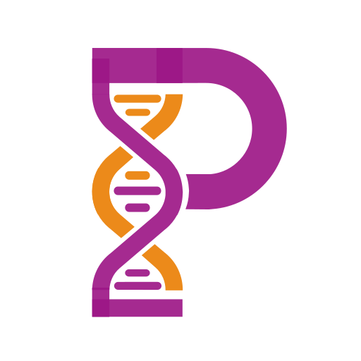
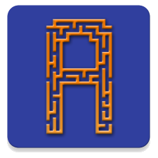
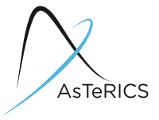

Software
I love developing software, especially mobile apps with a cloud-based backend. My work includes some purely research oriented projects as well as some more real world ones.
Active
GreekTools
Java & Android library
A Java & Android library for manipulating Greek text - mainly transforming between Latin and Greek character sets.
Supports integration through gradle. Just follow the instructions on the GreekTools page at Github.
Developed by Nearchos Paspallis.
Prostate Cancer App (ProsCApp)
Android & iOS app
 The ProsCApp is a virtual coach for those involved in the delivery of care of patients diagnosed with prostate cancer. It was developed as a cross-platform mobile app using Flutter, for the European Oncology Nursing Society (EONS).


Developed by Nearchos Paspallis.
aMazeChallenge App
Android app & AppEngine backend

The aMazeChallenge app is an Android app, which realizes the client-side of a game that teaches coding.
The players learn to control a player by code, and are asked to solve increasingly more challenging puzzles. The AppEngine-powered backend allows players to compete with each other live.

Developed jointly by Nicos Kasenides and Nearchos Paspallis. Its code is hosted on Github at: https://github.com/nearchos/aMazeChallenge as open source software (under the LGPL license).
Cyprus Pharmacy Guide
Android app & AppEngine backend
I have developed Cyprus Pharmacy Guide as a toy project when I was learning Android.
Since then, I have published it on Google Play Store and it has become quite popular receiving praising comments from its users.
It is supported by an AppEngine-based backend which is used for synchronization of data (pharmacy details and on-call dates).

The source code of the AppEngine-based backend and the Android client is available on Github: https://github.com/nearchos/cypruspharmacyguide .
Cyprus Fuel Guide
Android app & AppEngine backend
I have developed Cyprus Fuel Guide mostly for research purposes.
It consists of an Android-based and a Web-based client.
It is supported by an AppEngine-based backend which is used for synchronization of data (station details and fuel prices).

The source code of the AppEngine-based backend is available on Github: https://github.com/nearchos/fuel-prices-server.
Code Cyprus App
Android app
The Code Cyprus app is an Android app, which realizes the client-side of a gamified treasure hunt.
This app is used as the official client of the yearly Code Cyprus Treasure Hunt (which usually involves ~100 participants).

Its code is hosted on Github at: https://github.com/NPaspallis/CodeCyprusApp as open source software (under the LGPL license).
Treasure Hunt Challenge
AppEngine backend
The Treasure Hunt Challenge is a server-side software, implemented on Google AppEngine, which is used to run gamified treasure hunts. This system is used as part of the Computing Skills module at UCLan Cyprus, and also serves at the backend of the yearly Code Cyprus Treasure Hunt (which usually involves ~100 participants).
This service provides an API for building Treasure Hunt clients. The API is described in detail at https://uclan-thc.appspot.com/guide.
Its code is hosted on Github at: https://github.com/nearchos/uclan-thc as open source software (under the LGPL license).
Context-Aware Indoor Positioning System (CAIPS)
Android app
The Context-Aware Indoor Positioning System (CAIPS) is a platform for collecting and analyzing indoor positioning training data (such as radio maps) augmented with context-aware information (such as temperature, device model, etc.) CAIPS is an Android native app.
Its code is hosted on Github at: https://github.com/nearchos/CAIPS as open source software (under the LGPL license).
Less active
Really Simple Context Middleware (RSCM)
Android middleware
 I have developed the Really Simple Context Middleware (RSCM) project.
It is intended to be a framework (pluggable, middleware architecture) facilitating the development of context-aware apps for Android.
I have developed the Really Simple Context Middleware (RSCM) project.
It is intended to be a framework (pluggable, middleware architecture) facilitating the development of context-aware apps for Android.
Its source code was originally hosted on Google Code, and now on Github: https://github.com/NPaspallis/rscm.
Legacy
Zero Gravity
Android game
 ZeroGravity is an Android game developed in partnership with the Zero Gravity student team.
It had two aims: (a) help the student team promote their school's model formula one racer, and (b) help them practice for the competition (e.g. to have a good response time).
ZeroGravity is an Android game developed in partnership with the Zero Gravity student team.
It had two aims: (a) help the student team promote their school's model formula one racer, and (b) help them practice for the competition (e.g. to have a good response time).

Its source code is available on Github at: https://github.com/nearchos/ZeroGravity.
AsTeRICS
Java-based middleware for Assistive Technology
 Assistive Technology Rapid Integration & Construction Set is a complete framework enabling rapid prototyping of assistive technology apps. AsTeRICS received funding under the Seventh Framework Programme for Research and Technological Development (FP7 - 2007-2013). G.A.No. 247730.
My main contribution to the project was the co-design and implementation of the core middleware architecture. I have designed and implemented code mostly under the AsTeRICS Runtime Environment (ARE) middleware project.
Its source code is available on Github at: https://github.com/asterics/AsTeRICS.
Data
Open Data: Cyprus Water
Open data and API
This project is about collecting and maintaining important data related to water resources in Cyprus and making them available as Open Data. Developed during #opendatacy 2018.
You can find the MIT License code on GitHub at https://github.com/nearchos/cyprus-water. You can also find the landing page at http://cyprus-water.appspot.com and the API docs at https://cyprus-water.appspot.com/api.
MDD Questionnaires
Open data
A quantitative evaluation of an approach for developing context-aware apps via reusable context plugins. The evaluation includes a Model Driven Development (MDD) approach. Data collected as part of a university class.
Indoors-Positioning fingerprints
Open data
An open dataset containing anonymized data collected and used to evaluate fingerprint-based positioning algorithms. The experiment involved 4 individuals, each using a different device model, covering 2 floors of a medium-sized building, producing a total of 307 fingerprints. A typical fingerprint includes a radiomap of 10-20 RSS measurements, along with the selected context. Each fingerprint also has the exact coordinates as they were specified by the user and information about the location and the floor they correspond to, along with the id of the user that created them. This data is associated with the CAIPS project.
The data is available at https://raw.githubusercontent.com/nearchos/CAIPS/master/data/isd2016-positioning-anonymized.json